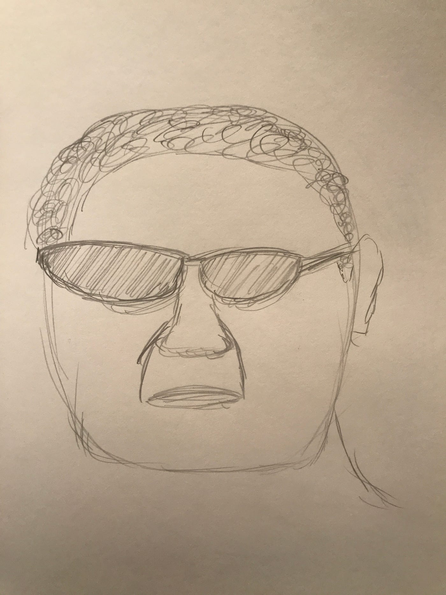
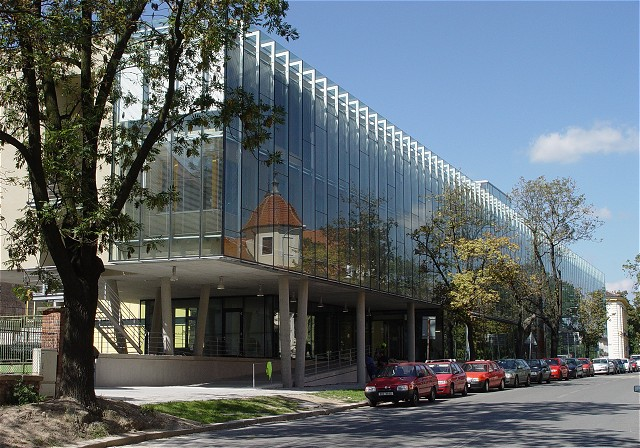
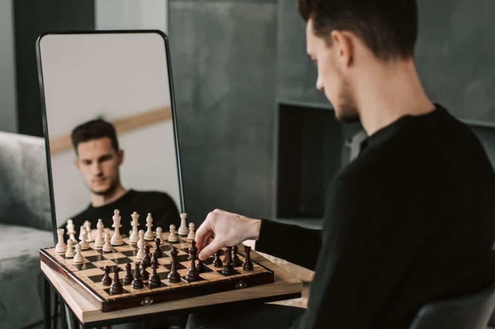
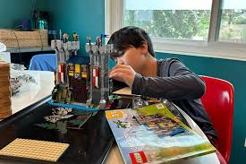
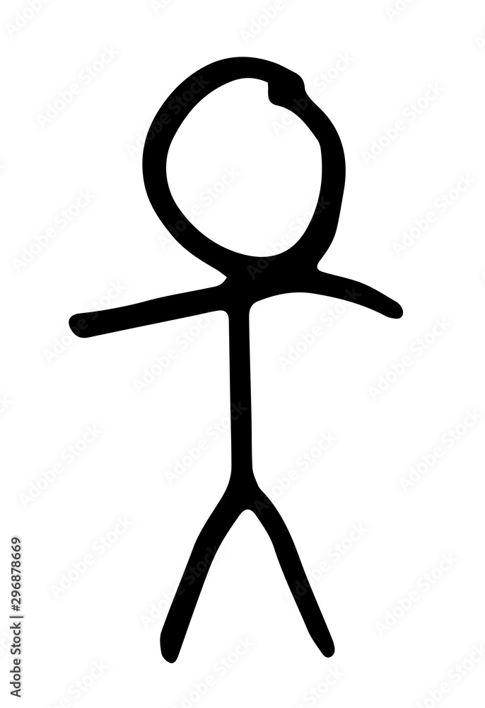
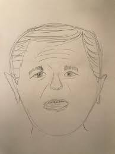
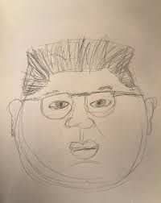
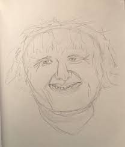

Augustýn
O Augustýnovi
Augustýn je studentem na FIT VUT a od té doby, co zde studuje, nevěnuje čas ničemu jinému, jelikož tohle studium ho natolik naplňuje, že je schopen mu věnovat veškarý svůj čas. Svému studiu obětoval svoje záliby ve sportu, hudbě a omezil stýkání se s přáteli i rodinou.Koníčky
FIT VUT
 Augustýnovým největším koníčkem je studium na FIT VUT. FIT VUT v Brně (Fakulta informačních technologií Vysokého učení technického v Brně) je přední česká fakulta zaměřená na informatiku a IT.Šachy
 Augustýn rád hraje šachy, ovšem kvůli tomu, že se s níkým nevídá, je většinou hraje sám se sebou. Jeho oblíbnenou strategií je tzv. "Fool's mate", jehož rychlost Augustýnovi připomíná rychlost uspořádání pole pomocí bubble sort.LEGO
 Augustýn věří tomu, že je důležité udržovat svoje vnitřní dítě šťastné, proto se často uchyluje ke stavění lega. Tento koníček jej provází už od dětství a Augustýn to stále vnímá, jako příjemný útěk před realitou.Kamarádi
Oskar

Proslulý svojí krásou.
Vavřinec

Proslulý svým nadšením do umění.
Osvald

Dříve informatik, nyní proslulý podnikatel.
Emanuel

Proslulý tím, že měl z předmětů až moc bodů.